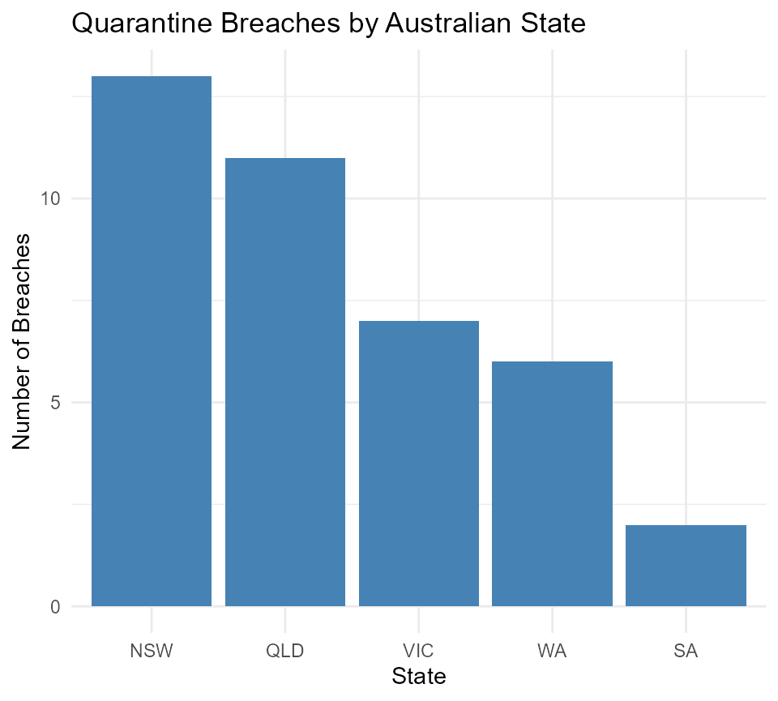

Introduction to the Quarantine Data
introduction.RmdThis package contains two datasets related to COVID-19 quarantine in Australia.
Loading the Data
To get started, load the package. Once loaded, you can access the datasets directly.
The Breaches Dataset
The breaches_data dataset contains detailed information
on individual quarantine breach events in Australia.
head(breaches_data)
#> # A tibble: 6 × 9
#> no state date facility case_name variant onward vax link
#> <dbl> <chr> <date> <chr> <chr> <chr> <lgl> <dbl> <chr>
#> 1 1 WA 2020-04-14 Duxton Hotel Security… - FALSE NA http…
#> 2 2 WA 2020-05-12 Pan Pacific Perth… Contract… - FALSE NA http…
#> 3 3 VIC 2020-05-25 Rydges Hotel Staff an… - TRUE NA http…
#> 4 4 VIC 2020-06-14 Stamford Hotel Security… - TRUE NA http…
#> 5 4 VIC 2020-06-15 Stamford Hotel Couple - TRUE NA http…
#> 6 5 NSW 2020-08-17 Marriot Hotel Security… - FALSE NA http…The Quarantine Risk Dataset
The data_time dataset contains aggregated information on
estimated quarantine risk over time.
head(data_time)
#> # A tibble: 6 × 4
#> report_date state total breach
#> <date> <chr> <dbl> <dbl>
#> 1 2020-10-27 AUS 12 NA
#> 2 2020-10-27 NSW 6.6 NA
#> 3 2020-10-27 NT 0 NA
#> 4 2020-10-27 QLD 0.4 NA
#> 5 2020-10-27 SA 1.4 NA
#> 6 2020-10-27 VIC 0 NAVisualization examples
# Breaches by state
breach_summary <- breaches_data %>%
group_by(state) %>%
summarise(
n_breaches = n(),
n_onward = sum(onward, na.rm = TRUE)
) %>%
arrange(desc(n_breaches))
ggplot(breach_summary, aes(x = reorder(state, -n_breaches), y = n_breaches)) +
geom_col(fill = "steelblue") +
labs(title = "Quarantine Breaches by Australian State",
x = "State", y = "Number of Breaches") +
theme_minimal()